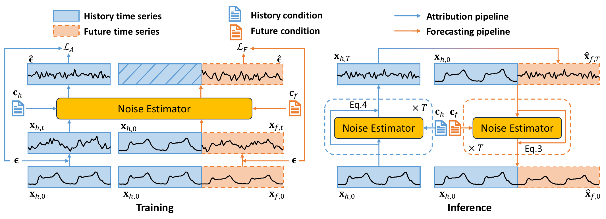

What-if text
Flexible future conditions
Describe events in natural language instead of fixed intervention categories.
One observed history can lead to many plausible futures. TADiff makes those futures controllable with natural language.
Time series forecasting is increasingly shaped by forthcoming events rather than historical patterns alone. Traditional models usually rely on historical observations or factual future conditions, making it difficult to reason about counterfactual scenarios such as unexpected traffic, weather, health, or market events.
We introduce counterfactual time series forecasting with textual conditions, where future conditions are expressed as flexible natural-language descriptions. TADiff uses a text-attribution mechanism to separate mutable textual effects from immutable historical factors, then forecasts with a condition-aware diffusion process.
The project also includes an evaluation framework for both factual and counterfactual settings. DTTC-I measures consistency with intrinsic historical factors, while DTTC-E measures consistency with future textual semantics when the true counterfactual future is unavailable.
Describe events in natural language instead of fixed intervention categories.
Extract condition-independent features before generating the future.
Denoise future sequences under target textual assumptions.
Evaluate semantic consistency for futures that never happened.
TADiff first attributes condition-invariant historical signals, then generates factual or counterfactual futures under target textual conditions.

Training jointly optimizes attribution and forecasting. Inference first attributes xh,T from history, then uses it as the initial diffusion state for future forecasting.
Diffuse the historical sequence under historical text to remove extrinsic context and obtain intrinsic features xh,T.
Initialize the future diffusion state with xh,T, concatenate clear history, and denoise under the future textual condition cf.
Construct alternative future conditions and optimize semantic alignment even when counterfactual ground-truth futures are absent.
DDIM-style denoising models stochastic time-series evolution under given text conditions.
Instead of random Gaussian noise, TADiff starts future generation from attributed historical features.
MAE/MSE are used with ground truth; DTTC handles unobserved counterfactual futures.
| Dataset | Metric | TADiff (Ours) | DLinear | PatchTST | Sundial | VerbalTS | TimeCMA | TimeMMD | CT | IATSF |
|---|---|---|---|---|---|---|---|---|---|---|
| Synth | MAE ↓ | 0.54 | 0.73 | 0.67 | 0.76 | 1.00 | 0.82 | 0.66 | 0.57 | 0.55 |
| MSE ↓ | 0.51 | 0.87 | 0.73 | 1.01 | 1.53 | 1.09 | 0.67 | 0.34 | 0.48 | |
| DTTC-I ↑ | 15.37 | 13.75 | 14.65 | 13.73 | 12.42 | 13.64 | 14.30 | 13.43 | 13.08 | |
| DTTC-E ↑ | 78.40 | 64.68 | 67.06 | 64.25 | 74.30 | 64.26 | 68.87 | 67.68 | 63.32 | |
| ETTm1 | MAE ↓ | 0.57 | 0.84 | 0.82 | 0.90 | 0.58 | 0.88 | 0.79 | 0.79 | 0.82 |
| MSE ↓ | 0.76 | 1.52 | 1.55 | 1.90 | 0.87 | 1.61 | 1.37 | 1.29 | 1.42 | |
| DTTC-I ↑ | 10.01 | 8.99 | 9.97 | 9.96 | 8.16 | 8.34 | 9.74 | 8.44 | 7.92 | |
| DTTC-E ↑ | 146.91 | 86.33 | 109.60 | 96.98 | 141.14 | 74.17 | 108.14 | 88.22 | 80.65 | |
| Traffic | MAE ↓ | 0.35 | 0.52 | 0.42 | 0.40 | 0.80 | 0.93 | 0.41 | 0.45 | 0.91 |
| MSE ↓ | 0.27 | 0.43 | 0.29 | 0.34 | 1.07 | 1.07 | 0.28 | 0.34 | 1.05 | |
| DTTC-I ↑ | 17.90 | 11.27 | 12.97 | 16.36 | 9.73 | 6.31 | 12.97 | 11.12 | 6.52 | |
| DTTC-E ↑ | 81.38 | 48.31 | 58.32 | 66.14 | 53.75 | 21.71 | 58.86 | 54.10 | 24.21 | |
| Exchange | MAE ↓ | 0.15 | 0.15 | 0.14 | 0.14 | 0.21 | 0.15 | 0.22 | 0.23 | 0.12 |
| MSE ↓ | 0.04 | 0.04 | 0.04 | 0.04 | 0.10 | 0.04 | 0.08 | 0.10 | 0.04 | |
| DTTC-I ↑ | 17.37 | 16.62 | 16.78 | 17.04 | 15.62 | 16.62 | 16.03 | 15.71 | 16.33 | |
| DTTC-E ↑ | 216.03 | 204.90 | 208.68 | 206.49 | 212.13 | 204.64 | 184.25 | 199.23 | 209.12 | |
| Weather | MAE ↓ | 0.18 | 0.26 | 0.19 | 0.24 | 0.51 | 0.30 | 0.27 | 0.31 | 0.18 |
| MSE ↓ | 0.11 | 0.15 | 0.11 | 0.14 | 0.46 | 0.19 | 0.13 | 0.17 | 0.09 | |
| DTTC-I ↑ | 26.65 | 26.79 | 26.83 | 26.83 | 24.85 | 26.84 | 26.41 | 26.24 | 26.54 | |
| DTTC-E ↑ | 31.55 | 29.60 | 30.25 | 29.44 | 31.23 | 29.45 | 29.25 | 29.98 | 29.81 |
| Dataset | Metric | TADiff (Ours) | DLinear | PatchTST | Sundial | VerbalTS | TimeCMA | TimeMMD | CT | IATSF |
|---|---|---|---|---|---|---|---|---|---|---|
| ETTm1 | DTTC-I ↑ | 10.59 | 8.96 | 10.51 | 9.94 | 8.62 | 9.47 | 10.14 | 8.43 | 7.93 |
| DTTC-E ↑ | 148.72 | 96.45 | 113.02 | 107.14 | 140.95 | 103.42 | 113.65 | 93.24 | 87.71 | |
| Traffic | DTTC-I ↑ | 18.08 | 11.33 | 12.99 | 16.32 | 9.44 | 6.36 | 12.96 | 11.15 | 6.57 |
| DTTC-E ↑ | 78.58 | 48.41 | 54.86 | 64.79 | 53.69 | 22.71 | 56.10 | 52.67 | 24.62 | |
| Exchange | DTTC-I ↑ | 17.30 | 16.61 | 16.79 | 17.03 | 15.29 | 16.79 | 16.25 | 15.67 | 16.31 |
| DTTC-E ↑ | 213.94 | 200.45 | 201.30 | 200.57 | 211.37 | 201.84 | 196.16 | 194.49 | 199.65 | |
| Weather | DTTC-I ↑ | 26.93 | 26.79 | 26.83 | 26.83 | 24.43 | 26.84 | 26.75 | 26.25 | 26.53 |
| DTTC-E ↑ | 30.99 | 29.04 | 29.25 | 28.91 | 30.16 | 29.00 | 29.30 | 29.23 | 29.18 |
@inproceedings{gu2026tadiff,
title = {What if Tomorrow is the World Cup Final? Counterfactual Time Series Forecasting with Textual Conditions},
author = {Gu, Shuqi and Zhao, Yongxiang and Jing, Baoyu and Ren, Kan},
booktitle = {International Conference on Machine Learning (ICML)},
year = {2026}
}